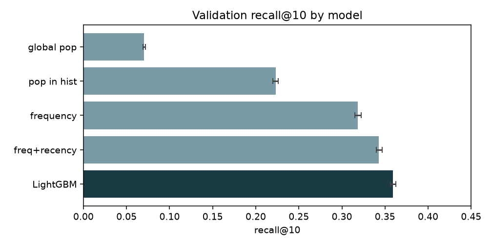
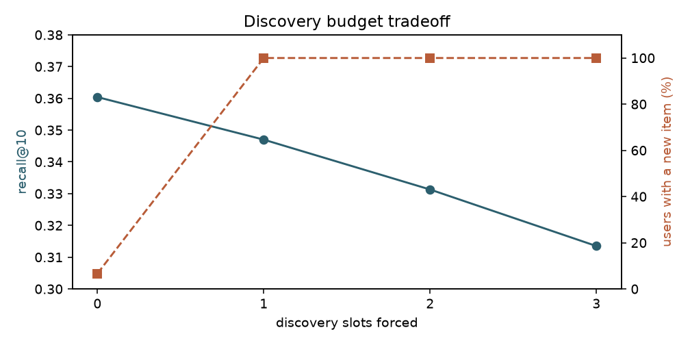
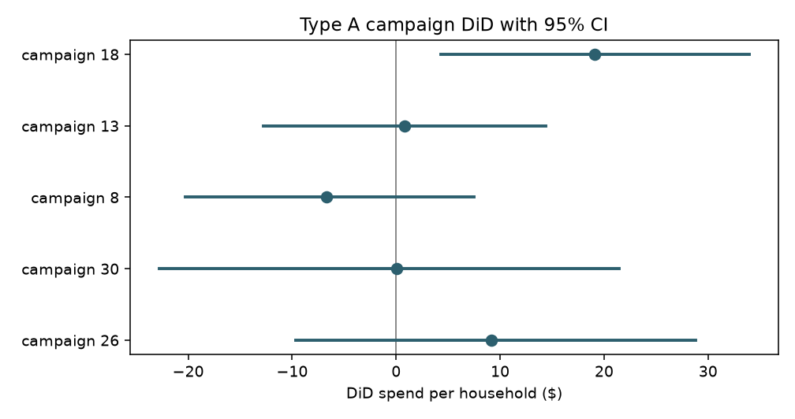

Recommending the next grocery basket
A next-basket recommender and the experiment needed to evaluate it.
One discovery slot costs 1.3 recall points and puts a new item in front of 99.96% of shoppers. Whether it increases spend is still an open question.

The question
Given a shopper’s order history, what should appear in their next grocery basket? More specifically: should a recommender reserve space for products the shopper has never bought?
I used the Instacart dataset, with 3.4 million orders, to build the ranking system. I used a separate retail dataset from dunnhumby to study promotion measurement. The datasets are never joined.
Start with a baseline worth beating
I compared global popularity, popularity within a shopper’s history, purchase frequency and a tuned frequency-and-recency heuristic before training a LightGBM classifier to score candidates.
On 26,258 held-out users, repeat-only LightGBM achieved recall@10 of 0.3591, versus 0.3430 for frequency and recency. The improvement is useful but modest. Restricting candidates to a shopper’s history delivered more value than any individual ranking improvement.
In the validation comparison above, confidence intervals are bootstrapped over users, preserving within-basket dependence.
The important decision was retrieval
About 40% of a held-out basket contains items the shopper has never bought. A repeat-only candidate set cannot retrieve those items, regardless of the ranker.
I added a co-occurrence discovery channel, built from fit users only. The two-channel model still allocated very few top-ten slots to new items. I then measured an explicit post-ranking discovery budget.

This is a product tradeoff. Offline relevance can quantify its cost, but cannot establish a spend benefit. Instacart has no prices, impressions or click data.
A raw spend gap can be misleading
On dunnhumby, households selected for five large campaigns spent $118 to $287 more than unselected households during the campaign. Subtracting their own prior spend through difference-in-differences reduced the estimates substantially.

These observational estimates depend on assumptions, including parallel trends. They do not prove that discovery recommendations increase spending, and they are not an evaluation of the Instacart model.
The test I would run
The proposed experiment randomizes households to the existing policy or one reserved discovery slot. Its primary outcome is spend per household over 56 days. Using the dunnhumby spend variance as a planning assumption, detecting a $19 difference at 80% power requires 4,849 households per arm.
The design specifies a sample-ratio-mismatch check and an orders-per-household guardrail. It has not been run. An actual implementation would need target-population variance estimates and a fixed analysis plan before assignment.
How I made it reproducible
DuckDB performs the large joins and aggregations out of core. The training split is deterministic, early stopping uses an inner fit holdout and features use prior orders. The repository includes data integrity checks, user-level bootstrap intervals, calibration and cohort analysis, a FastAPI service, a Streamlit interface and Docker configuration.
The API and demo run locally. The next step is real-world validation: I have not run the online experiment or established an online business result.